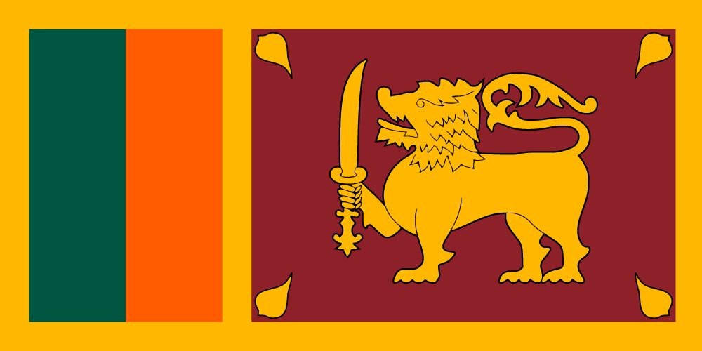
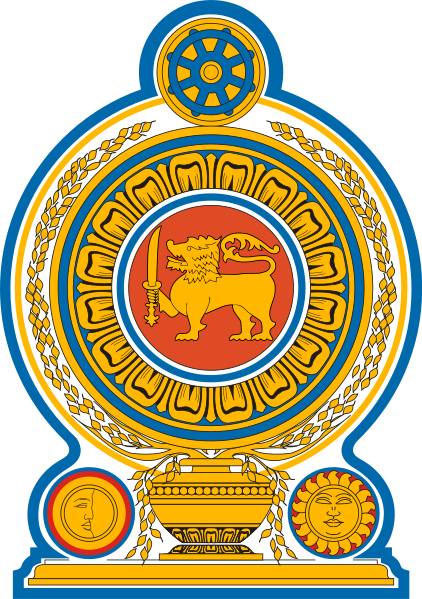

SRI LANKA

The Democratic Socialist Republic of Sri Lanka, is an island country in South Asia, located in the Indian Ocean southwest of the Bay of Bengal and southeast of the Arabian Sea. It is geographically separated from the Indian subcontinent by the Gulf of Mannar and the Palk Strait. Sri Jayawardenepura Kotte is its legislative capital, and Colombo is its largest city and centre of commerce. Its location as a major trading hub made it known to both the far East as well as the European continent from as far back as the Anuradhapura period. The country's trade in luxury goods and spices attracted traders of many nations, creating Sri Lanka's diverse population.During a period of great political crisis the Portuguese, whose arrival in Sri Lanka was largely accidental, sought to control the island's maritime regions and its lucrative external trade. The Portuguese possessions were later taken over by the Dutch. The Dutch possessions were then taken by the British, who later extended their control over the whole island, colonising it from 1815 to 1948. A national movement for political independence arose in the early 20th century; and in 1948, Ceylon became a republic, and it adopted its current name in 1972. Sri Lanka's recent history has been marred by a 30-year civil war, which ended decisively when the Sri Lanka Armed Forces defeated the Liberation Tigers of Tamil Eelam in 2009Buddhism is given special privileges in the Sri Lankan constitution. Sri Lanka is home to many cultures, languages and ethnicities. The majority of the population are from the Sinhalese ethnicity, while a large minority of Tamils have also played an influential role in the island's history. Moors, Burghers, Malays, Chinese, and the indigenous Vedda are also established groups. Officail Languages - Sinhala and Tamil Recognised Language - English Ethnic groups - Sinhalese, Sri Lankan Tamils, Sri Lankan Moors, Indian Tamils, Others (Burghers, Malays, Veddas, Chinese, Indians) Religions - Buddhism, Hinduism, Islam, Christianity